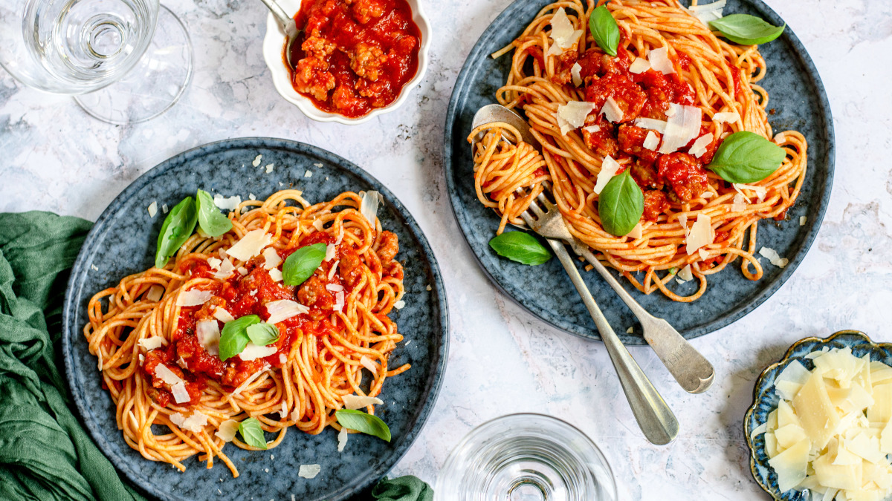

The Most Basic Spaghetti Ever
This recipe is the first food I cooked in my life. My best friend taught me how to make this.
A basic spaghetti recipe with store-bought Marinara sauce, because I don't know how to cook.
Ingredients
- 70g of Store Brought Spaghetti (any brand works)
- 1 cup of Marinara Sauce (Go by Preference, I used Prego for this recipe)
- 1 Teaspoon of Oil
- 1 Pot of Water
- 1 Teaspoon of Salt
Instructions
- Fill a pot 2/3 of the way with water and let it boil.
- Put a teaspoon of salt and oil into the pot as it boils.
- Put 70 grams or any desired amount of the packaged spagetti into the water, when the water has boiled.
- Let the spaghetti cook, as it cooks the spaghetti will become soft and fully submerge (please don't break the spaghetti, it's a crime to the Italians).
- After about 10 minutes, take a strand of spagetti out, fling it at a vertical surface, and see if it sticks (this is optional, maybe). If it doesn't stick, let it take 5 minutes longer. Repeat till it sticks to the wall (or you can just eyeball it, it's probably edible either way)
- After the spagetti is cooked, strain the water out of the pot. Put the spagetti on a plate and add a cup of marinara sauce to it (or as much as you like, I'm not judging).
- Enjoy!